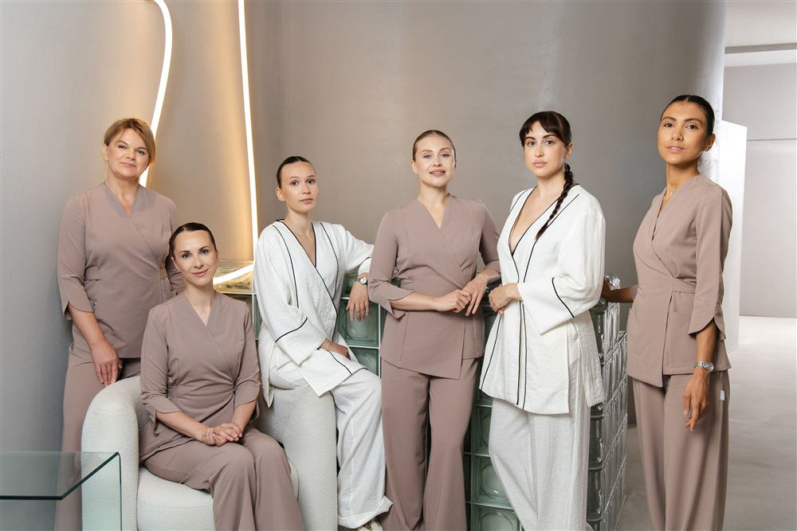
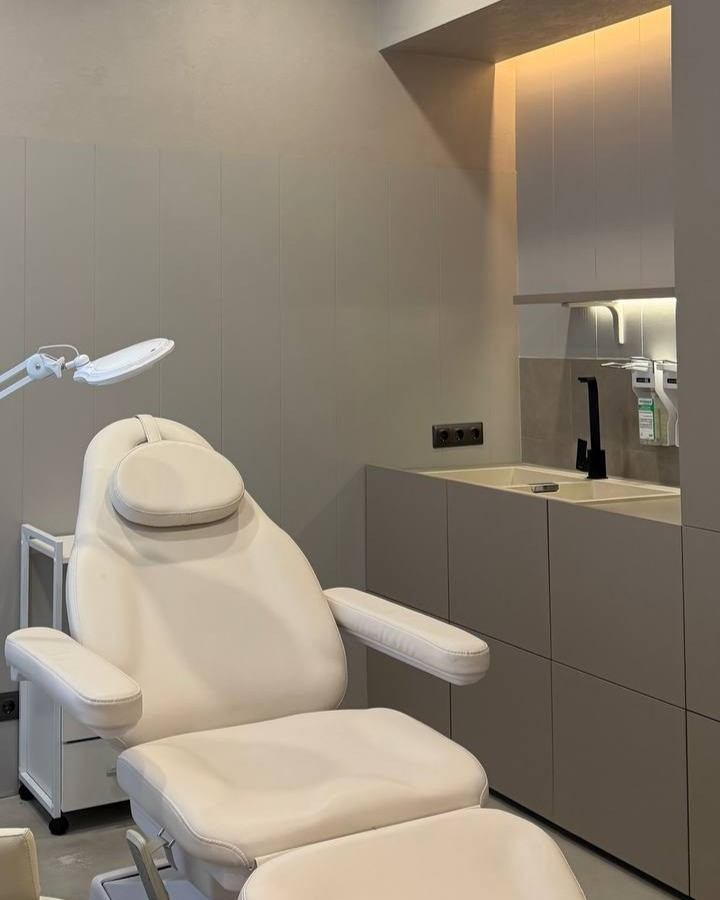
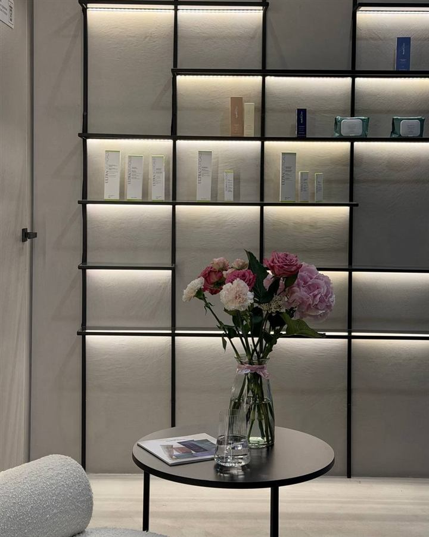
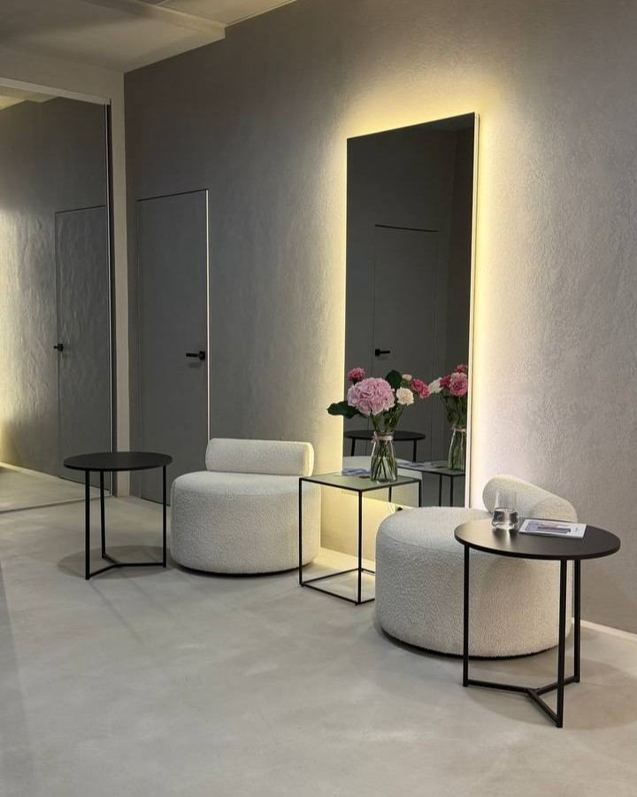

Не блог с процедурами — объяснение того, что происходит с лицом
Здесь не будет «10 лучших пилингов» и статей ради статей. Мы пишем про пять вещей: почему меняется лицо, где чаще всего ошибаются, из чего оно устроено, как на него влияет образ жизни — и как на самом деле выглядит путь пациента, а не «до/после» за один визит.

СистемаПочему нельзя лечить одну проблему на лице отдельно
Морщина, отёк или тусклый цвет кожи редко существуют сами по себе. Разбираем, как одна зона лица связана с другой — и почему точечная процедура не решает то, что происходит системно.
Почему эффект биоревитализации иногда проходит быстрее, чем должен
Не всегда дело в препарате. Разбираем, что чаще всего остаётся «за кадром» процедуры — и почему без этого эффект держится недолго.

Архитектура лицаНосогубная складка начинается не с носогубной складки
Связки, жировые пакеты, коллаген — как устроено то, что мы привыкли считать «просто морщиной», и почему туда нельзя просто добавить объём.

Образ жизниКак дефицит железа читается на лице раньше, чем в анализах
Сон, белок, железо, стресс — образ жизни отражается на коже быстрее, чем кажется. Что стоит проверить, прежде чем записываться на процедуру.

История пациентаПуть вместо процедуры: как выглядит год системного наблюдения
Не «до/после» за один визит. Реальная последовательность решений на протяжении года — что делали, когда и почему именно в этом порядке.
Почему ботокс иногда делает лицо уставшим
Дело не в дозировке самой по себе — а в том, что дозировку выбирают без учёта остального лица. Разбираем частую причину «эффекта заморозки».
Это примеры карточек для демонстрации вёрстки журнала — все ведут на один шаблон статьи. Замените на реальные тексты, когда будете готовы публиковать.
Если после чтения появились вопросы именно про ваше лицо — это к системной консультации, а не к комментариям.